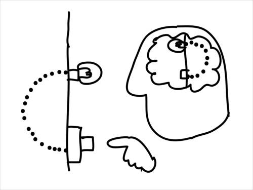

Circuit Lab.
Probe New Insights
未知の領域を探査 - Probe するのが私たちの使命です。
人の創造性は、より深く考え、知ろうとする探究の努力の末、ふと新しい領域の存在を感じ取る瞬間から始まります。既知の世界の内側にまだ知られていない何かを見る素晴らしい能力 - Insight が人には備わっています。より多くの人々の、より多くの Insight が世界を変える最初の一歩を踏み出し、その可能性を現実にするためには、何が必要でしょうか。それは、手や道具を用いて、Insight が指し示す領域まで実際に行ってみることだと私たちは考えています。探査機 (Probe) が空へ出発するのは、知の宇宙と物理の宇宙との狭間で新しい経験をするためです。考え抜き、その結果を持って探検に出かけ、さらに考える…その繰り返しによって、予感にすぎない新しい可能性が、手触りのある、引き寄せるべき何かに変わっていくと考えています。
What We Do
私たちが新しい Insight を得たとき、次にするべきことは何でしょうか。
その価値を明確にし、共に進むべき人たちと共有するのは非常に難しい作業です。Insight が指し示す可能性はたいてい、形のない、意識によって見逃されがちな隙間のような存在です。本質的に扱いづらいものでもあり、だからこそ新しい価値が眠ったままになっています。
しかし順を追って取り組めば、それは次第に姿を表し、追い求めやすいものに変化させていくことができます。
new Insight - new Question - new Goal - new Definition

私たちは、Insight はまず、新しい世界の見方としての Concept に変換され、その新しいものの見方が、現状に対する違和感 - Question に変換される必要があると考えています。
Question は各種のデザイン方法論が得意とするような手段によって、具体的に達成すべき目標 - Goal に変換されます。Goal を現実化するための方法論はさまざまありますが、私たちの実践は主に Insight から出発し、Question を発見したり、ユニークな Goal や Definiton を例示することを目指しています (Probe) 。可能性をひとつ現実化させることで、Insight の示唆する領域が実践の対象として立ち上がるのです。
この最初のプロセスは、Ars Electronica で提唱されている、Desigin Thinking に先行する段階を扱う Art Thinking と親和性の高いものです。
Insight を出発点に、複数の Idea を検討し、それぞれの Idea に対して Probe を行います。Probe された Idea は、宇宙探査機がデータや資材を持ち帰るように、新しい経験に変換されます。それらの経験を統合することで新しい文脈 - Concept を書き起こします。
私たちは、さまざまなミッションに参加する機会ごとに、このプロセスを後押ししてきました。
-
Hyper ICC
- Hyper Museum Probe
- 情報環境に存在するミュージアムはどのようなものか？
- https://hyper.ntticc.or.jp/
-
Project Sprint Quest
- Project Theory Probe
- プロジェクト (人々が協力して新しいことに取り組むことは) なぜどのように可能なのか？
- https://quest.projectsprint.org/
-
poniponi
- Social Innovation Driving Probe
- そこに暮らす人々のために社会の姿をどのように更新し続けることができるか？
- https://poniponi.or.jp/
新しく魅力的な Insight を持っており、最初の一歩、次の一歩を踏み出すための手助けを必要としている人々と共に、これからも Probe を続けたいと思っています。